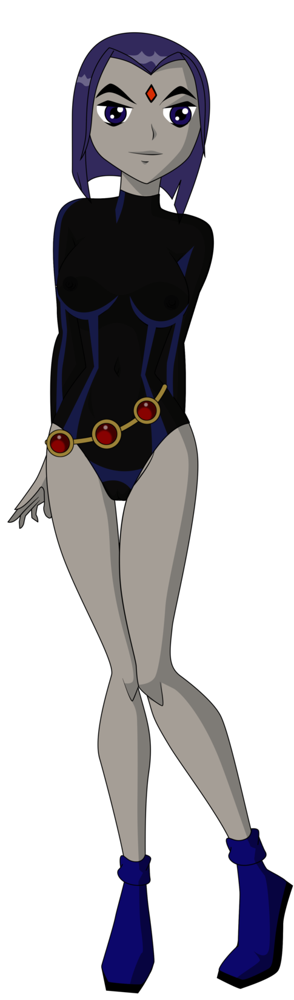

 Raven es uno de los Personajes principales de Los Jóvenes Titanes, es la hija del demonio tridimensional Trigon lo cual le da poderes imaginables, y es una integrante de los Jóvenes Titanes. Ella es la Titan numero 5.
Raven es la hija del demonio interdimensional Trigon. Ella creció en la dimensión alternativa de Azarath y se le enseñó a controlar sus emociones, suprimir sus poderes demoníacos y ademas creció gran parte de su vida allí.